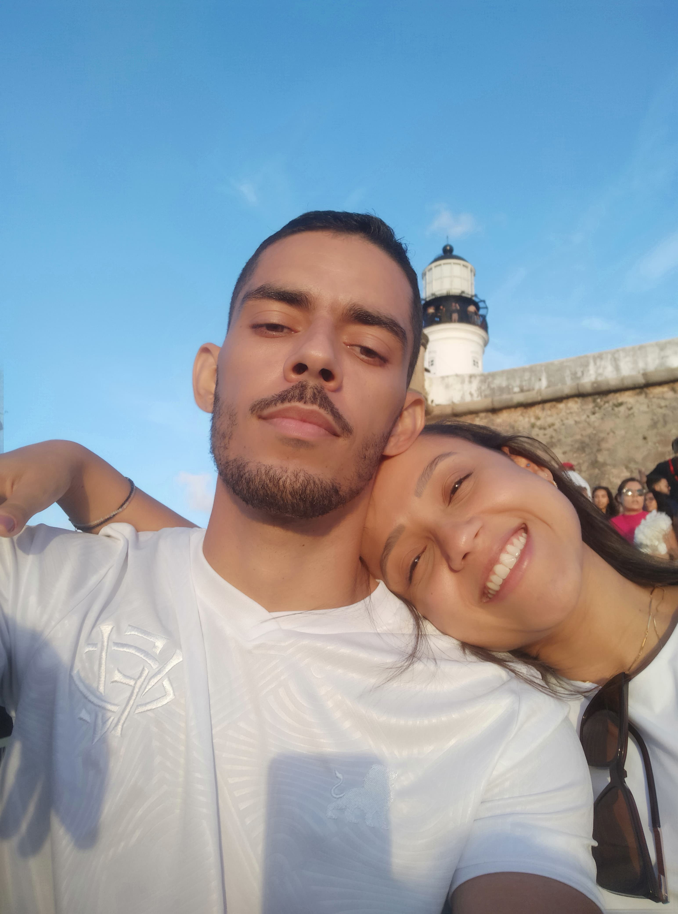
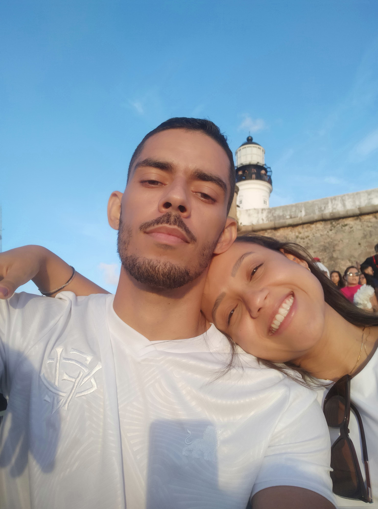

O tempo da nossa história:
Enchendo seu saco, de pegações no carro pelas ruas, experimentando restaurantes, cafés e lanches por Salvador e aguentando suas mini-bravezas.


Estado civil: NOIVOS üíç
Nosso álbum digital

A cada dia que passa me impressiona como a certeza de que você é a pessoa perfeita para o meu ser só cresce.
É como se, a cada novo amanhecer, ao abrir os olhos e no primeiro instante lembrar que tenho você, uma reação em cadeia surgisse em meu organismo — um misto de gratidão e alegria. Essa reação produz um hormônio que me revigora, energiza e me traz o sentimento de plenitude. Levando ao meu cérebro o pensamento que confirma o que o coração já sabe há muito tempo: que é você a razão pela qual a vida ganha propósito e que é com você que eu quero estar, pois só com você a vida tem sentido.
A essa altura, já passamos por alguns cenários — dos incríveis aos turbulentos. E o curioso é que, independentemente da direção para a qual a balança do bem-estar se incline, o resultado final é sempre o mesmo: no fim do dia, é você quem equilibra a minha alma.
Quando tudo está bem e a balança está no topo, é em você que encontro o reflexo da minha felicidade. É de você que nasce minha força de vontade para evoluir, para ser uma versão melhor de mim. É você que desperta em mim o desejo de ir além, de construir, de sonhar, de querer mais, de viver mais.
E mesmo quando a balança desce e os problemas nos tocam, é por você que me esforço para evoluir. É com você que aprendo a compreender, perdoar, ouvir com o coração, diminuir o orgulho, ser mais maduro e fortalecer a empatia. Com você, aprendi que amar não é apenas celebrar os dias bons, mas também saber caminhar de mãos dadas, entrelaçadas, nos dias difíceis. Sem soltar, sem recuar e sem desistir.
Você é a minha calmaria quando o caos se aproxima, e a minha chama quando a vida parece apagar.
É a razão, o refúgio e o impulso.
Com você, entendi que o amor não é sobre perfeição, mas sim sobre sintonia — aquela conexão que permanece firme mesmo quando tudo ao redor parece desmoronar.
E é por isso que, não importa o que aconteça, sempre volto ao mesmo ponto: o centro do meu equilíbrio, o ponto exato entre o céu e a terra, é você.

 

Por do sol na barra - O pedido de namoro
"Preciso que você fique pronta 15:30, no máximo 16h".
E você fingindo que não fazia ideia da surpresa. Cara de pau.
Que tarde incrível. A luz do por do sol sendo refletida nos seus olhos. A brisa da barra
balançando seus cabelos. Você deitada no meu colo me encarando com um olhar de apaixonada. O cheirinho de mar misturado com o seu cheiro. O tio da vodka pingando a mão molhada na gente quando balançava o drink, e eu nervoso - pra variar - ja tramando te pedir em namoro.
Mais um momento marcante, mais uma memória inesquecível.
"Aqui é um ótimo local pra te pedir em namoro"
"Achei que a gente ja tava namorando"
"Como se eu nao pedi?"
"E precisa pedir?"
"Claro. Quer namorar comigo?"
"Obvio que sim, meu amor"
E aqui fica o registro da cartinha que dediquei a você, onde a ideia desse site começou, no que possivelmente foi o dia que mais fiquei nervoso na minha vida: a noite em que te pedi em casamento. Eu lembro cada minuto dessa noite. Dos ajustes que fui pensando e fazendo porque nada seguia o planejado, absurdo. De cada vez que eu levantava e trocava a aliança de bolso pra você não ver. Lembro da roupa que vc usava, como estava seu cabelo, lembro do seu cheiro naquela noite, do seu olhar de desconfiada, do seu sorriso, e lembro principalmente do seu SIM. Que noite.
12/06/25 - Dia dos namorados:
""A data é comercial, tudo bem, mas por ser a nossa primeira, tem a sua devida importância.
Importante como o primeiro passeio, pra caminhar;
Importante como a primeira saída, pra jantar;
Importante como a primeira conversa, sobre se relacionar;
Importante como o "não para aqui, meu porteiro é fofoqueiro". Você queria era me beijar, sua danadinha;
Importante como, FINALMENTE, o primeiro beijo. E que beijo;
+18: Importante como a primeira transa — uma contravenção, diga-se de passagem, dois erradinhos;
Passar o primeiro — de futuros muitos — dia dos namorados contigo me traz todas as lembranças do quanto eu imaginei e idealizei como seria estar com você.
O quanto esperei, o quanto quis. No primeiro momento pensei que depois de todo esse tempo buscando, estar com você era uma conquista.
Mas percebo que na verdade você é um presente. Não no sentido de objeto físico, mas no sentido imaterial. Um presente pra minha alma, um presente pro meu ser, um presente pro meu futuro. (E modéstia a parte, o pai é um presentaço viu? Outro igual não tem, completo demais, pode procurar)
Então só me cabe agradecer a Deus por trazer você até mim, equalizar nossas energias — minha luz — e me ancorar no seu cais — meu porto. Mas como essa conversa é entre eu e ele, com licença.
Dito isso, pra você tambem fica minha gratidão. Por entrar em minha vida me fazendo imensuravelmente feliz, completo e com sede de viver para sempre estar com você. Por me fazer descobrir o que é amar, e me tornar a pessoa que está disposta a entregar o mundo inteiro só pra ganhar um sorriso teu, e que sorriso.
Por ser uma pessoa incrível e, que se fosse para ser breve e resumir em poucas palavras se tornaria, indescritível. Por ter finalmente baixado a guarda - (teimosa) - e parar de ficar, parafraseando Thiaguinho: "adiando a vontade de Deus". Me permitindo mostrar quem eu sou, o quanto eu te admiro, te respeito, te valorizo e principalmente o quanto eu sempre te quis — e te quero.
Pra você, meu xuxu, eu estou disposto a mover o mundo, seja nele um grão de areia ou qualquer montanha. Para sempre estar com você, voltar pra você, e fazer o que estamos vivendo ser alem do perfeito. E, por fim, estar na sua vida sendo o seu PILOTO:
"Caprichoso, cuidadoso e amoroso
Um bom moço, atencioso
Corajoso, companheiro e verdadeiro
Um escudeiro, sem receio
Se precisar, perigoso
Faço o almoço, sirvo a mesa
Beija o teu corpo todo, trago cerveja (Cerveja não, AGUA)
Depois te beijo de novo, lavo a louça
Apago e ascendo o seu fogo
Jogando o TEU jogo[...]
A minha missão, minha tenente, é te fazer FELIZ.
Te amo minha gatinha, minha vida, minha deusa, minha musa, meu ar, meu chão, minha vida, meu tudo
Obs: Muito."